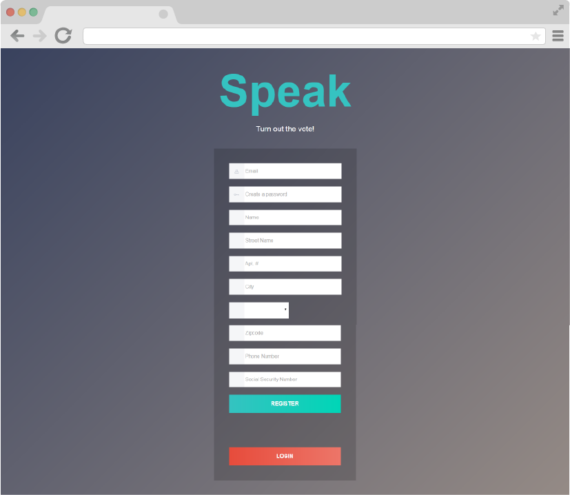
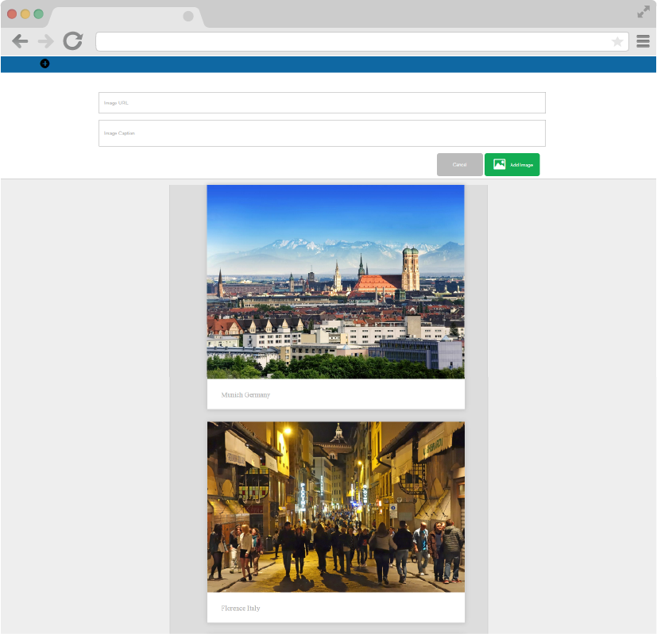

<!-- <!DOCTYPE html>
<html lang="en">
	<head>
		<meta charset="utf-8">
		<meta name="viewport" content="width=device-width, initial-scale=1.0">
		<title>Erika Moller</title>
		<link rel="stylesheet" type="text/css" href="../bower_components/normalize.css/normalize.css">
		<link rel="stylesheet" type="text/css" href="../compiled/style.css">
		<link href="https://fonts.googleapis.com/css?family=Lora:400,700|Vollkorn:400,600" rel="stylesheet">
		<link rel="stylesheet" href="../assets/ionicons.css">
	</head>
	<body>
		<header>
			<div class="header-wrapper">
				
				<div class="menu-dropdown">
					<nav>
						<div class="menu-title">
							<h4>Menu</h4>
						</div>
						<div class="menu-submenu">
							<ul>
								<li class="active-box"><a href="../index.html">Home</a></li>
								<li><a href="portfolio.html">Portfolio</a></li>
								<li><a href="assets/erika.moller_resume.pdf">Resume</a></li>
							</ul>
						</div>
					</nav>
				</div>
			</div>
			<div class="x-line"></div>
		</header>
		<section>
			<div class="wrapper">
				<section class="section">
					<div class="main-title">
						<h1>Speak</h1>
						<h4><a href="https://speak-out.herokuapp.com/#/register">View live</a> or see on <a href="https://github.com/erikadmoller/final-project">Github</a></h4>
					</div>
					<div class="project-wrapper">
						
					</div>
					<div class="project-details">
						<div class="project-header col-lf">
							<h1>Tech</h1>
							<ul>
								<li>AngularJS I</li>
								<li>Lodash</li>
								<li>HTML5</li>
								<li>Sails</li>
								<li>Sass</li>
								<li>Twilio</li>
							</ul>
						</div>
						<div class="project-header col-rt">
							<h1>About</h1>
							<p>If casting your vote was an online experience, what would that look like? In this web app called Speak the user is able to register themselves to vote and find current issues to choose from listed by their local and state governments. After casting their vote, the user can elect to receive a text message with a link to a web page of status polls on each election.</p>
						</div>
					</div>
				</section>
				<section class="section">
					<div class="main-title">
						<h1>I Need A Shero</h1>
						<h4><a href="https://women-power.herokuapp.com">View live</a> or see on <a href="https://github.com/kbalducci/womenpower">Github</a></h4>
					</div>
					<div class="project-wrapper">
						
					</div>
					<div class="project-details">
						<div class="project-header col-lf">
							<h1>Tech</h1>
							<ul>
								<li>AngularJS</li>
								<li>Sass</li>
								<li>HTML5</li>
							</ul>
						</div>
						<div class="project-header col-rt">
							<h1>About</h1>
							<p>I Need A Shero is an app designed to inspire women facing various issues in multiple aspects of their lives (personal, student, professional). Users create an account and then have access to our database of inspirational women and their applicable quotations.</p>
						</div>
					</div>
				</section>
				<section class="section">
					<div class="main-title">
						<h1>Image Gallery</h1>
						<h4><a href="https://img-gal.herokuapp.com/">View live</a> or see on <a href="https://github.com/erikadmoller/image-gallery">Github</a></h4>
					</div>
						<div class="project-wrapper">
							
						</div>
					<div class="project-details">
						<div class="project-header col-lf">
							<h1>Tech</h1>
							<ul>
								<li>Angular</li>
								<li>Underscore</li>
								<li>HTML5</li>
							</ul>
						</div>
						<div class="project-header col-rt">
							<h1>About</h1>
							<p>Image Gallery allows users to upload a URL that is a .jpg with a caption that gets saved to their gallery.</p>
						</div>
					</div>
				</section>
			</div>
		</section>
		<footer class="footer-wrapper">
			<div class="footer">
				<a href="https://twitter.com/erikadmoller" class="ion-social-twitter-outline icons"></a>
				<a href="https://github.com/erikadmoller" class="ion-social-github-outline icons"></a>
				<a href="site/contact.html" class="ion-ios-email-outline icons"></a>
			</div>
		</footer>
		<script src="../bower_components/jquery/dist/jquery.min.js" type="text/Javascript"></script>
		<script src="../scripts/main.js"></script>
	</body>
</html> -->